Automated Pneumatic Bearing Installation System
Designed an automated system for picking, positioning, and press-fitting bearings into electric motor housings using pneumatic actuation and PLC-based sequential control. The project integrated mechanical design, pneumatic actuator sizing, a rotating transfer mechanism, custom bearing-handling end effectors, SolidWorks finite element analysis, proximity and limit-switch feedback, ladder logic, and industrial machine-safety considerations.
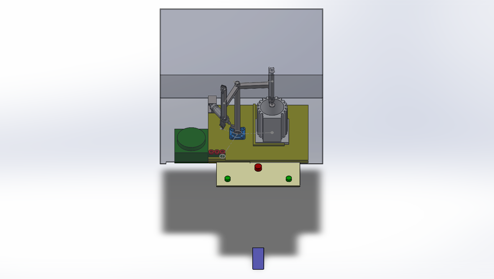
Automating Bearing Installation Into an Electric Motor Housing
Bearing installation requires controlled alignment and force. The machine needed to retrieve a bearing from an existing feeder, transfer it to an electric motor housing, place it accurately, and press-fit it into the housing without damaging the bearing. The design also had to integrate with an existing workstation and use pneumatic motion controlled by an Allen-Bradley PLC.
Handling Challenge
The bearing had to be picked up using its inner race, transferred between two workstation locations, and released into the motor housing while maintaining alignment.
Press-Fit Challenge
A separate pressing operation was required to apply approximately 100 lbf while contacting only the outer race of the bearing to reduce the risk of component damage.
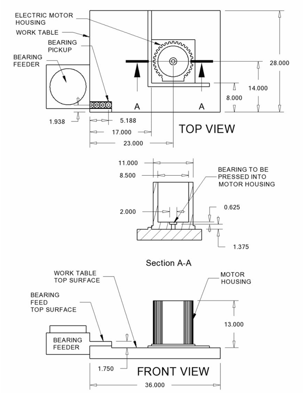
Converting the Manufacturing Process Into Design Constraints
The system requirements established the mechanical, pneumatic, controls, and safety constraints that guided the design. The machine had to mount directly to the existing workstation and complete all major motions pneumatically.
Mechanical Requirements
Controls & Safety Requirements
Using a Rotating Assembly Instead of a Large Linear Transfer System
A rotating architecture was selected because of the dimensional constraints of the existing workstation. A central shaft supports two separate arms: one carrying the gripper cylinder and the other carrying the press-fit cylinder. A third pneumatic cylinder rotates the entire shaft assembly between the bearing feeder and motor-housing positions.
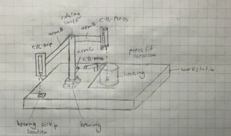
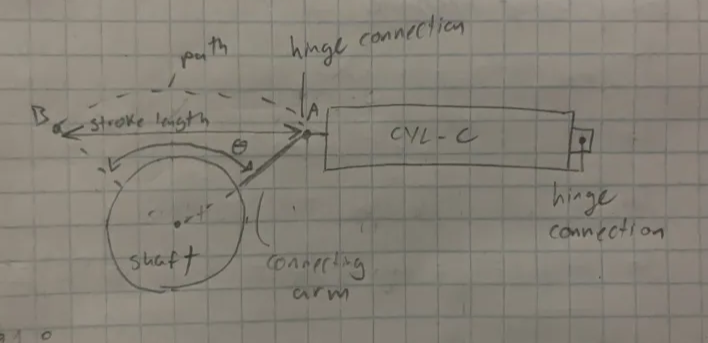
Rotational Geometry
The gripper and press locations required approximately 118.7° of shaft rotation. A 100 mm stroke movement cylinder was selected, and the corresponding moment-arm geometry was determined using the chord-length relationship.
The resulting moment-arm distance from the shaft center was approximately 2.288 in. Dynamic analysis was then used to estimate the pneumatic force required to rotate the assembly.
A 4130 Steel Shaft Supporting the Gripping and Pressing Systems
The primary structure consists of a vertical 4130 steel tube mounted to the workstation through a flange-bearing support. Two arms extend from the shaft and position the pneumatic tooling over the required working locations. The geometry was selected to provide sufficient motor-housing clearance while maintaining a compact workstation footprint.
Main Shaft
4130 steel round tubing with a 2 in outer diameter, 1.875 in inner diameter, and approximately 26 in overall length.
Gripper Arm
Extends approximately 11.391 in from the center of the main shaft and supports the vertical bearing-handling cylinder.
Press Arm
Extends approximately 11.418 in from the shaft center and supports the cylinder responsible for press-fitting the bearing.
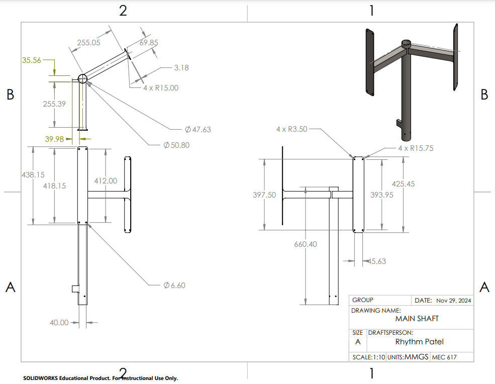
Main Shaft Design
The main shaft serves as the common structural and rotational element of the machine. It carries both vertical pneumatic cylinders while transmitting the motion generated by the horizontal movement cylinder.
Sizing Three Pneumatic Actuators for Handling, Pressing, and Rotation
Each pneumatic cylinder was sized according to its specific force, stroke, motion, and packaging requirements. All primary actuators were selected from the Festo DSNU family.
DSNU-20-300-PPV-A
Moves the pneumatic gripper vertically between its raised position and the bearing or motor housing.
DSNU-32-300-P-A-S10
Provides the force required to press the bearing into the motor housing while using a custom end effector that contacts the outer race.
DSNU-63-100-PPV-A
Rotates the main shaft between the bearing feeder and motor-housing positions through a clevis-connected moment arm.
Press Cylinder Sizing
A minimum piston diameter was calculated from the required 100 lbf press force and the maximum 90 psi supply pressure.
The calculated minimum diameter was approximately 30.2 mm, leading to selection of the next available 32 mm DSNU cylinder.
Handling the Inner Race and Pressing Only the Outer Race
Two different end effectors were required because bearing handling and bearing pressing place very different mechanical demands on the component. The gripper interfaces with the inner race, while the press tool transfers force exclusively through the outer race.
Custom Gripper Fingers
A pneumatic parallel gripper was fitted with custom 4130 steel fingers designed to expand against the inside surface of the bearing. The ends of the fingers were shaped to better conform to the bearing geometry, and the removable design allowed damaged fingers to be replaced independently.
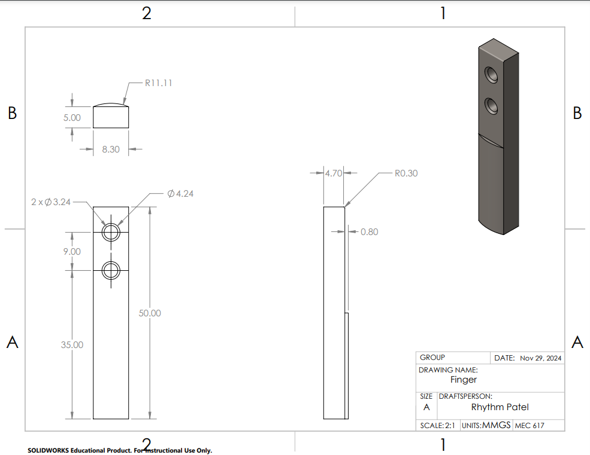
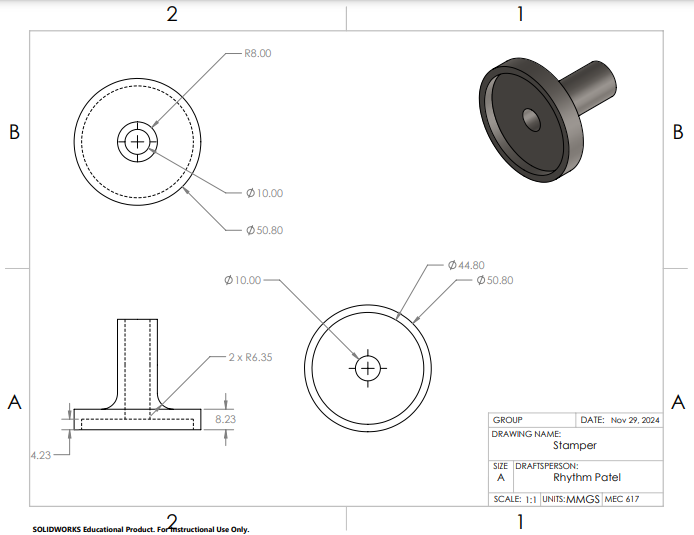
Outer-Race Bearing Stamper
A custom hollow press attachment was designed to thread onto the press-cylinder rod. The annular contact geometry aligns with the bearing's outer race, allowing the required press force to be transferred without loading the inner race.
Coordinating the Complete Pick, Transfer, Place, and Press Cycle
The process was arranged as a sequential pneumatic cycle. Sensor and limit-switch feedback determines when each motion has completed before the PLC advances to the next operation.
CYL-Grip +
Lower the gripper toward the bearing feeder.
Gripper +
Grip the bearing through its inner race.
CYL-Grip −
Raise the bearing clear of the feeder.
CYL-Move +
Rotate the assembly toward the motor housing.
CYL-Grip +
Lower the bearing into the motor housing.
Gripper −
Release the bearing into the housing.
CYL-Grip −
Retract the gripper clear of the housing.
CYL-Move −
Rotate the assembly back to its initial position.
CYL-Press +
Extend the press and install the bearing.
CYL-Press −
Retract the press cylinder and finish the cycle.
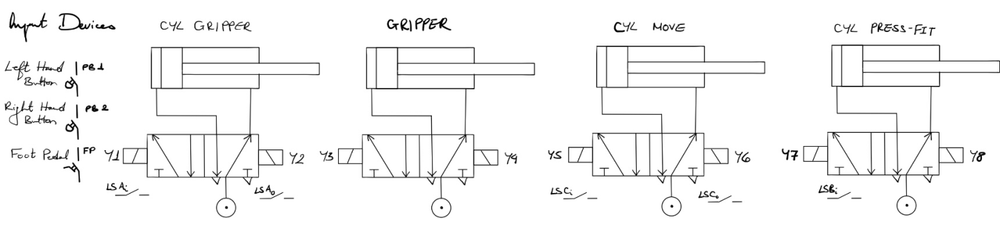
Translating the Pneumatic Sequence Into Ladder Logic
The automation sequence was implemented using an Allen-Bradley MicroLogix 1400 PLC architecture. Push buttons, a foot pedal, proximity sensors, gripper feedback, and cylinder limit switches were used as inputs. The combination of active inputs determines which pneumatic output is allowed to operate.
Sensor Feedback
PLC Functions
Press-Fit Timing
A physical sensor could not be conveniently installed at the bottom of the motor housing to directly detect the completed press stroke. The PLC model therefore uses a timer to control the pressing operation, allowing approximately six seconds for the press-fit before commanding cylinder retraction.
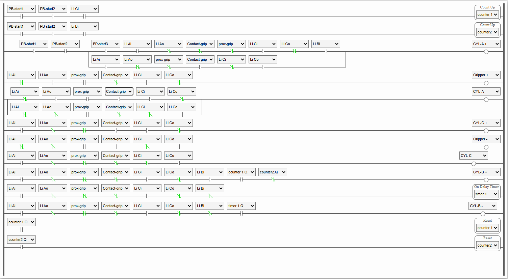
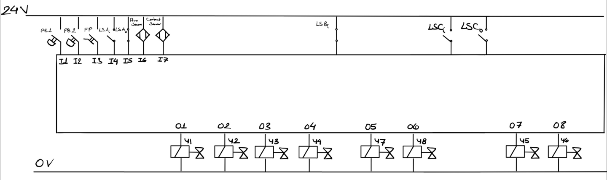
Checking the Rotating Structure Under Pneumatic Loading
SolidWorks Simulation was used to evaluate the main shaft under the loading produced by both the bearing-handling cylinder and the larger press-fit cylinder. Stress, displacement, and factor of safety were reviewed to determine whether the supporting structure could withstand the expected pneumatic loads.
Gripper-Cylinder Load Case
The report documented a maximum displacement of approximately 1.269 mm and a minimum factor of safety of approximately 1.549 for the shaft under the gripper-cylinder load case.
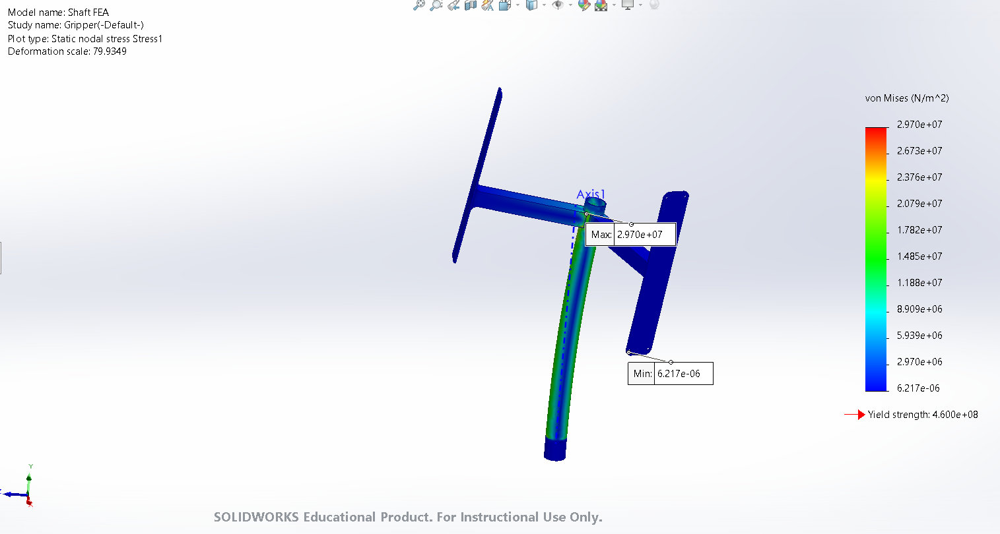
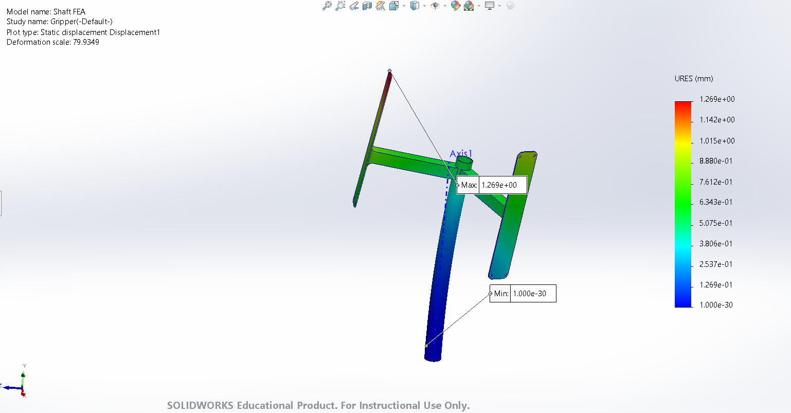
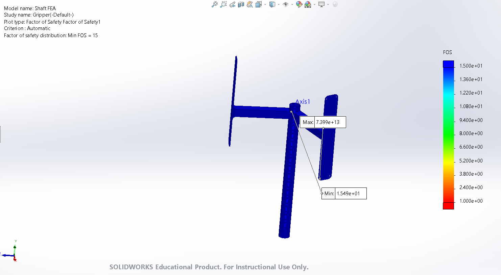
Press-Cylinder Load Case
The press-cylinder loading represented the larger operating force. The report documented a maximum shaft displacement of approximately 2.964 mm and a minimum factor of safety of approximately 5.979 for this simulation case.
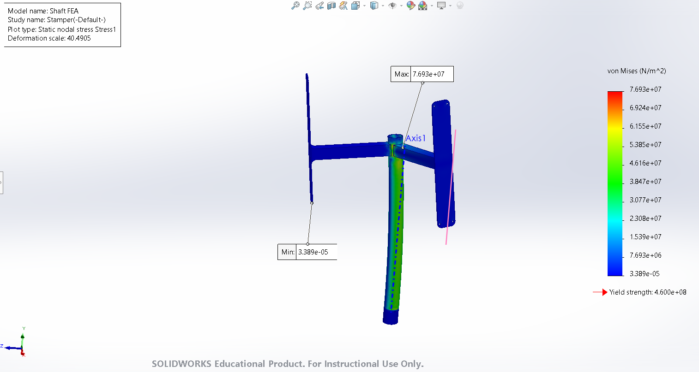
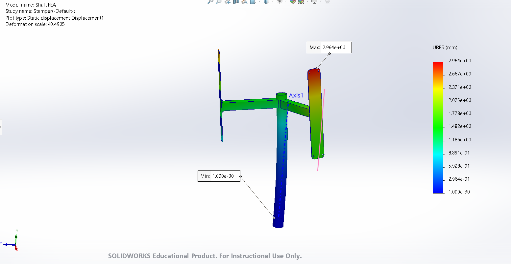
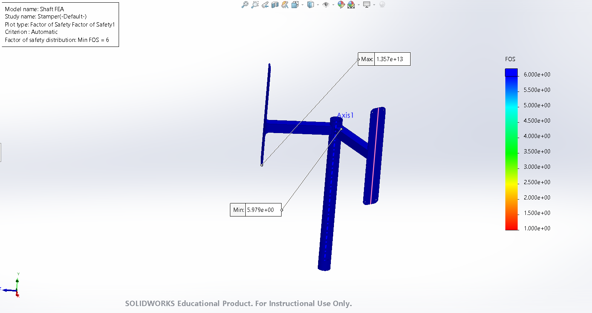
Verifying the Custom Press Tool Under the Required Bearing Load
The custom stamper was analyzed independently because it directly transfers the press-cylinder load into the bearing. The study applied opposing forces representative of the pneumatic press load and bearing reaction force to evaluate stress, deformation, and structural safety.
Stamper Structural Performance
The report documented approximately 0.003 mm maximum displacement and a minimum factor of safety of approximately 3.6, supporting the selected steel geometry for the press-fit operation.
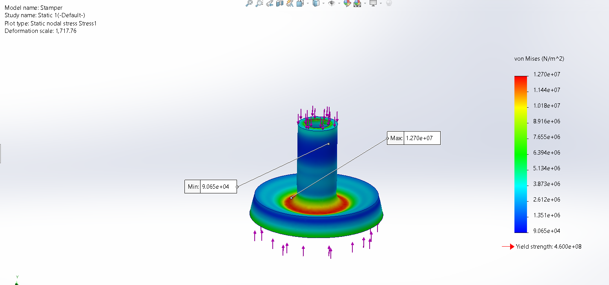
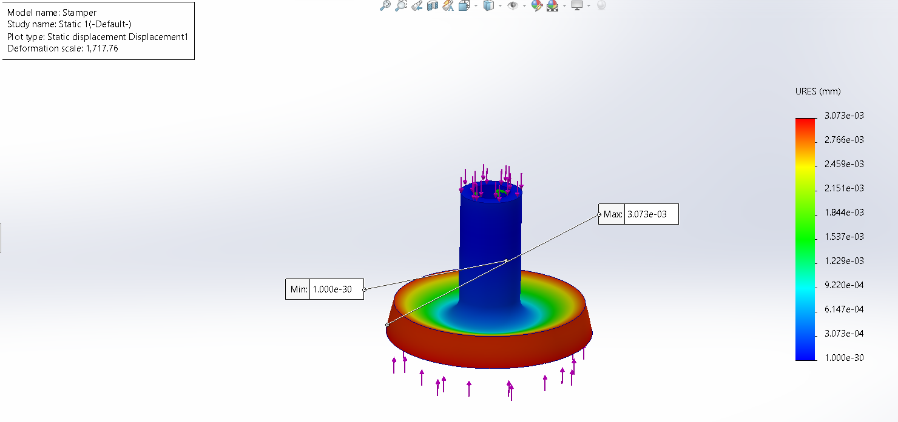
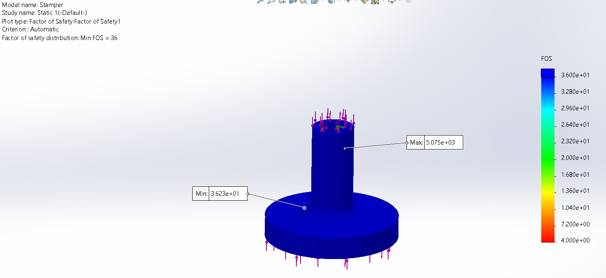
Designing Operator Protection Into the Automation System
The project incorporated safety features intended to reduce exposure to pinch points, uncontrolled pneumatic movement, hazardous energy, and accidental machine activation. Guarding and control-system safety were treated as part of the machine design rather than as separate additions.
Protective Features
Fail-Safe Considerations
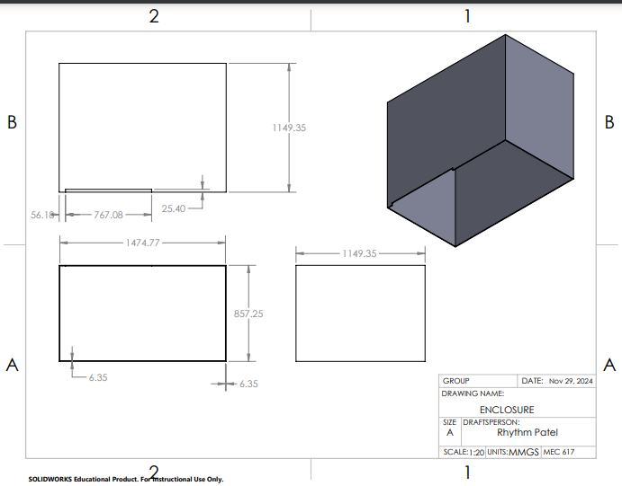
Detailing the Custom Components and Final Machine Assembly
Engineering drawings were developed for the custom machine components to define geometry, dimensions, assembly relationships, and manufacturing intent. These drawings complement the system-level CAD model and provide documentation for the enclosure, controls, tooling, movement mechanism, structural shaft, and final assembly.
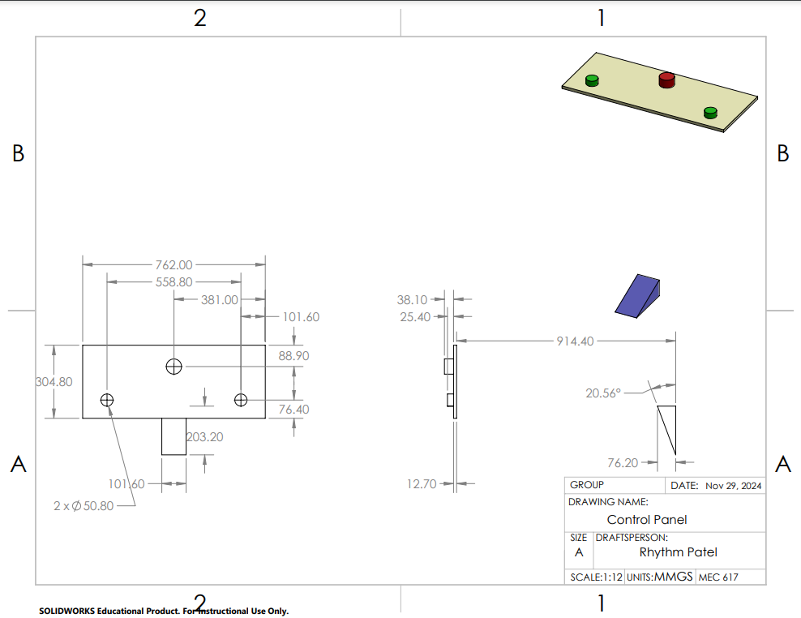
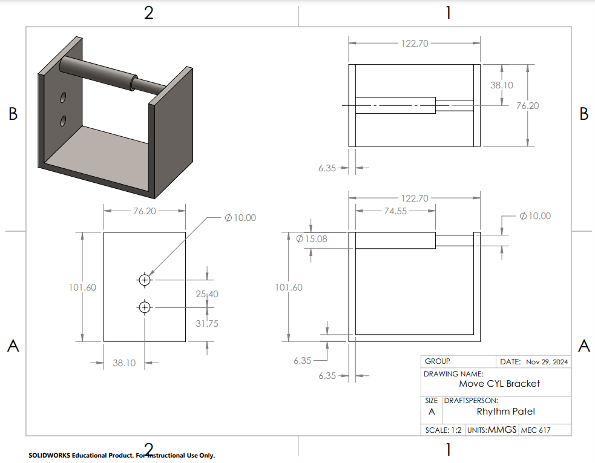
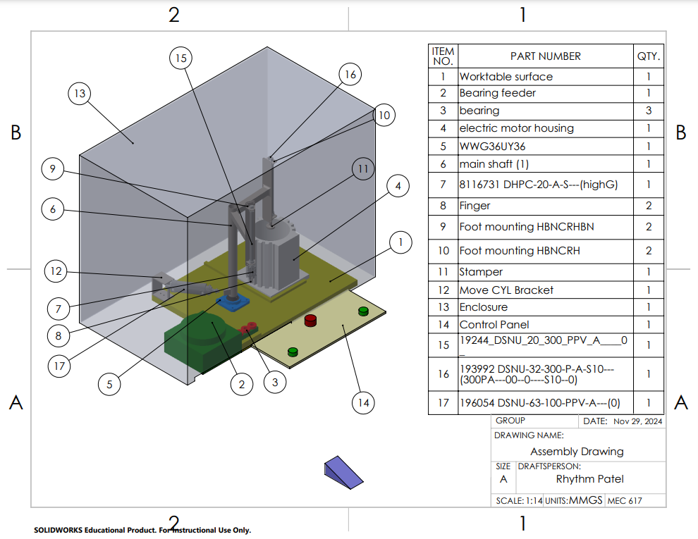
Integrating Mechanical Design, Pneumatics, and PLC Control
The completed design combines three pneumatic motion systems with custom bearing-handling tooling and a PLC-controlled sequence. The rotating architecture reduces the number of linear transfer axes required while allowing the gripper and press cylinders to share the same central structural assembly. According to the project report, the developed concept satisfied the target press force and sub-30-second cycle requirement while integrating sensor feedback and machine-safety features.
Engineering Outcome
The project demonstrates the complete design workflow for an automated manufacturing system: defining process requirements, developing a mechanical concept, sizing pneumatic components, designing custom tooling, validating structural components with FEA, developing PLC logic, and incorporating operator-safety considerations.